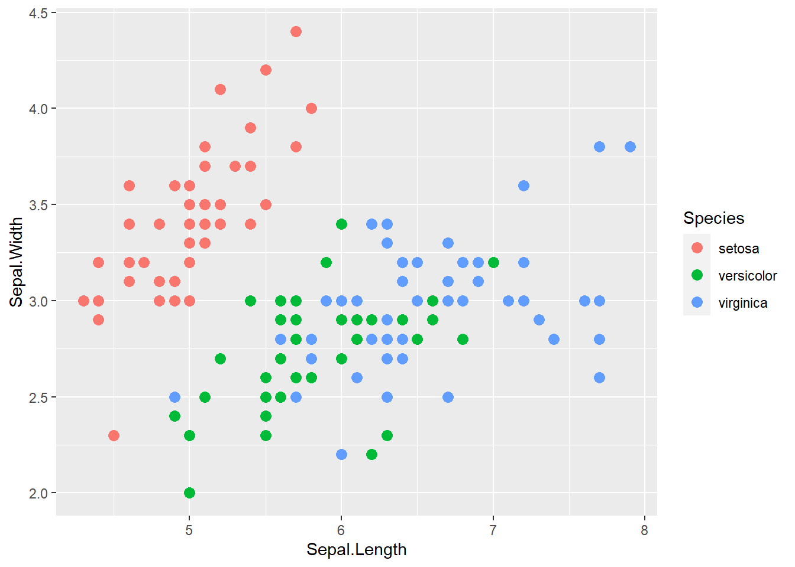

sum <- 2 + 7GfR-demo
Quarto
Quarto enables you to weave together content and executable code into a finished document. To learn more about Quarto see https://quarto.org.
I added this line for testing. Note that since we assign the addition to a variable, there is no output here. We get output when we put parentheses around the whole expression. Alternatively, we can just output the value of sum.
sum[1] 9Let me try some more changes. And additional ones. Here is a reference (Florida, Rodriquez-Pose, and Storper 2021) and a second one (Pisano 2020).
BTW, the sum is 9.
Mathematics
Many scholarly articles need mathematics. The industry standard for typesetting mathematics is LaTeX. In Quarto, you can use the whole range of LaTeX mathematical expressions. Here are a few examples
- an equation \[ Y = \alpha + \beta_1 X_1^2 + \beta_2 X_1 \]
- some linear algebra \[ \left[ \begin{array}{cc} 2 & 5 \\ 4 & 3 \end{array} \right] \left[ \begin{array}{cc} 2 & 5 \\ 4 & 3 \end{array} \right]^{-1} = \left[ \begin{array}{cc} 1 & 0 \\ 0 & 1 \end{array} \right] \]
- a continued fraction \[ e = 2 + \frac{2}{2 + \frac{3}{3 + \frac{4}{4 + \frac{5}{5 + \ddots}}}} \] In the continued fraction, \(e\) is Euler’s number, i.e. 2.7182818.
A scatterplot
We use the dataframe ´irisprovided by R. We plotSepal.LengthagainstSepal.Widthand color bySpecies`.
library(ggplot2)
head(iris) Sepal.Length Sepal.Width Petal.Length Petal.Width Species
1 5.1 3.5 1.4 0.2 setosa
2 4.9 3.0 1.4 0.2 setosa
3 4.7 3.2 1.3 0.2 setosa
4 4.6 3.1 1.5 0.2 setosa
5 5.0 3.6 1.4 0.2 setosa
6 5.4 3.9 1.7 0.4 setosaggplot(iris,aes(Sepal.Length, Sepal.Width, color=Species)) +
geom_point(size=3)
References
Florida, R, A Rodriquez-Pose, and M Storper. 2021. “Cities in a Post-Covid World.” Urban Studies. https://doi.org/10.111777/00420980211018072.
Pisano, C. 2020. “Strategies for Post-COVID Cities: An Insight to the Paris En Commun and Milano 2020.” Sustainability 12 (15): 58–83. https://doi.org/10.3390/su12155883.